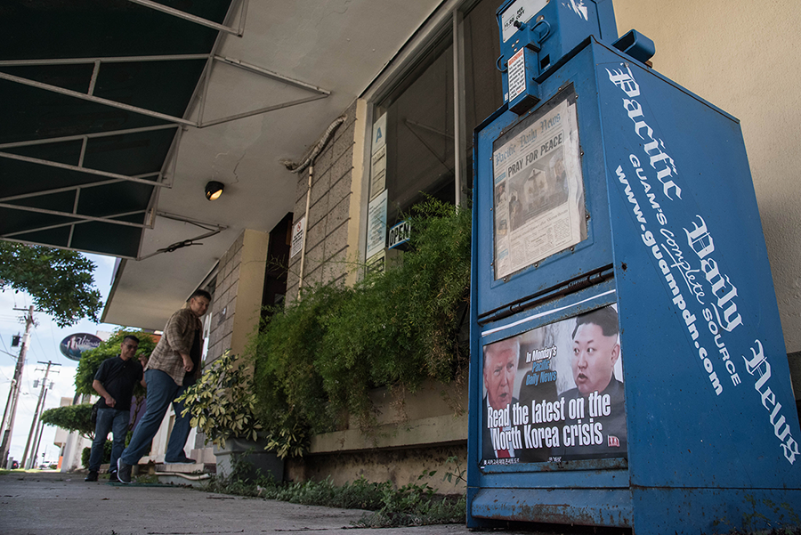

August 12, 2017. Volleyball players on a beach at Tumon Bay

August 12, 2017. A tourist standing on a beach at Tumon Bay
August 12, 2017. Performers dancing at a private resort
A news stand displays coverage of US-North Korea tensions outside a cafe in Guam, on August 14, 2017
Governor of Guam Eddie Baza Calvo sits at his desk in Hagatna, Guam on August 14, 2017
August 12, 2017. A group of men on a beach
August 13, 2017. Ron Acfalle, a pro-independence teacher of traditional culture, poses for a photo
Catholic worshippers attend a "prayers for peace" rally marking the 100th anniversary of Our Lady of Fatima in Hagatna on August 13, 2017
August 12, 2017. Children playing in the water
August 12, 2017. A fisherman catching 'goat fish'
August 13, 2017. a couple lie in the water on a beach at the Tumon bay area